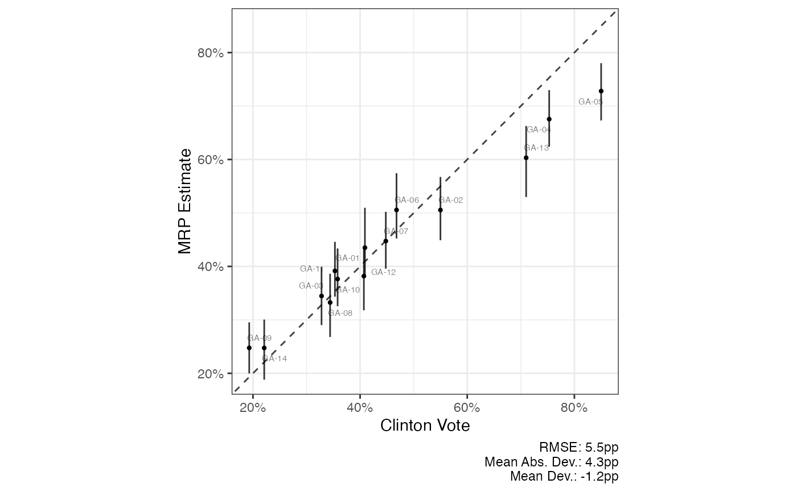

Standard scatterplot with 45 degree line
scatter_45( tbl, xvar, yvar, lblvar = NULL, xlab = NULL, ylab = NULL, xlim = NULL, ylim = NULL, ubvar = NULL, lbvar = NULL, by_form = NULL, by_labels = NULL, show_error = TRUE, expand_axes = TRUE, ... )
| tbl | dataset of summary statistics |
|---|---|
| xvar | Variable to put on x-axis, unquoted |
| yvar | Variable to put on y-axis, unquoted |
| lblvar | Variable to use as labels for |
| xlab, ylab | x and y-axis labels, respectively |
| xlim, ylim | x and y-axis limits, respectively. |
| ubvar, lbvar | Variable to use as upper and lower bounds for |
| by_form | If the dataset is in long form with separate rows for different
model estimates, you can supply a formula to be passed on to |
| by_labels | A named vector for the facets, where the names are the names
of the unique values of the variable by specified in |
| show_error | Whether or not to show the accuracy metrics in caption |
| expand_axes | Whether to expand the axes so that the plot is a square, even if there is more whitespace. Overrides xlim and ylim. |
| ... | Additional arguments sent to the |
library(dplyr) mrp_df <- summ_sims(poststrat_draws(fit_GA, poststrat_tgt = acs_GA)) %>% left_join(elec_GA)#>scatter_45(mrp_df, clinton_vote, p_mrp_est, lblvar = cd, lbvar = p_mrp_050, ubvar = p_mrp_950, xlab = "Clinton Vote", ylab = "MRP Estimate")